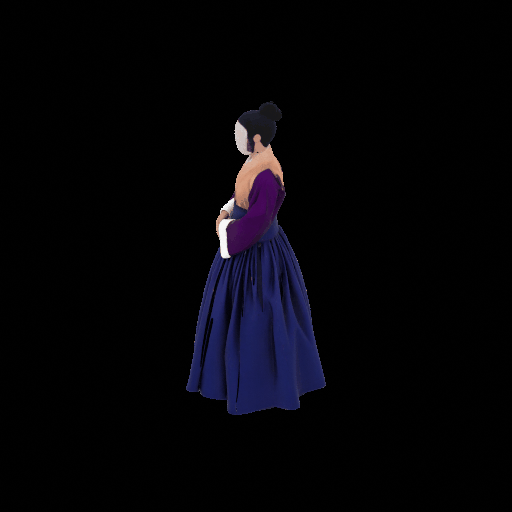

3D AI R&D
WORK EXPERIENCE
스팩스페이스 개발사업부 CV팀
SELECTED PROJECTS
금융 데이터PERSONAL PROJECT
기관마다 형식이 다른 모의 금융 데이터를 통합하고, 통합 결과를 원천과 대사해 오류를 자동으로 검출하는 개인 프로젝트입니다.
유형 · 역할
개인 프로젝트 · 데이터 수집부터 형식 표준화, 통합, 검증 규칙 설계, 결과 확인 화면까지 전 과정 직접 구현
15/15
의도적으로 삽입한 오류 전부 검출
검증 대상 84건 중
4개
정합성 검증 규칙
은행 · 카드 · 증권
모의 데이터 검증
MAPLESSUNDAYTEAM PROJECT
커뮤니티에 흩어져 있던 이벤트 이력을 구조화해 다음 이벤트를 예측하는 2인 팀 서비스입니다.
본인 역할
455건
구조화한 과거 이벤트 이력
2017년 3월 – 2026년 5월
4개
서비스 기능 — 예측 · 캘린더 · 캐릭터 조회 · 공지 조회
10주 중 9주팀 결과
TOP3 적중 · 팀 백테스트, 예측 모델은 팀원 담당
저장소 — 백엔드 라우터와 Supabase 스키마 공동 저장소이며 백엔드가 본인 구현 범위입니다.
OTHER PROJECTS
3인 팀이 약 1개월간 만든 모바일 청첩장 MVP입니다.
실제 매장 운영을 목적으로 배포했으며, 초기 사용 과정에서 입력 동선과 모바일 사용성을 점검했습니다.
PROFILE
실제 프로젝트에서 사용한 범위만 목적별로 정리했습니다.
동국대학교
통계학 주전공 · 소프트웨어 AI 연계전공
2027년 8월 졸업 예정
SQLD · ADsP · 컴퓨터활용능력 1급